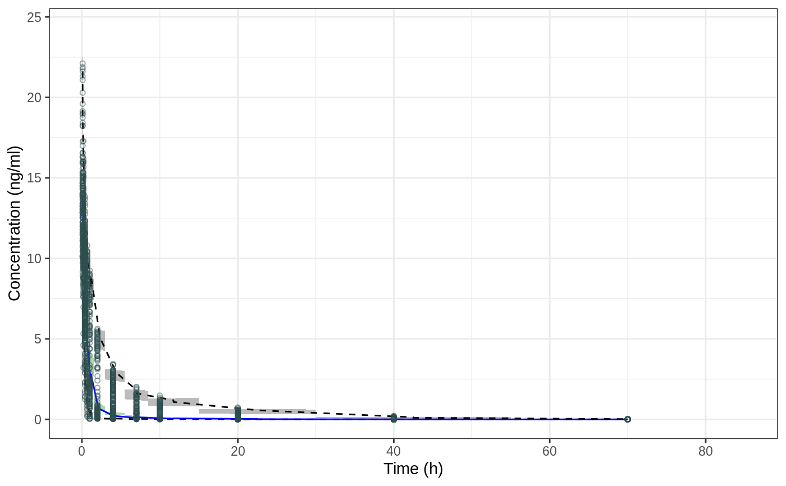
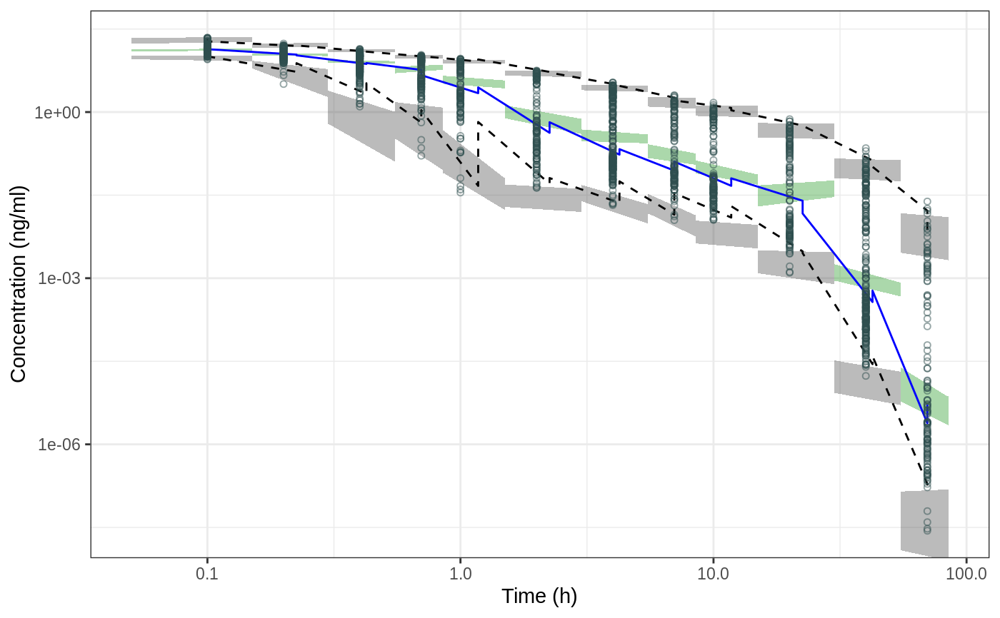
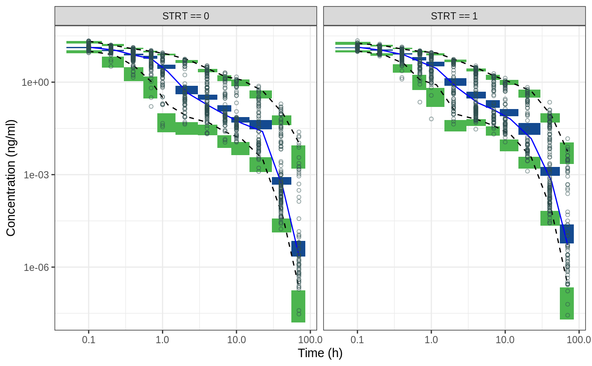
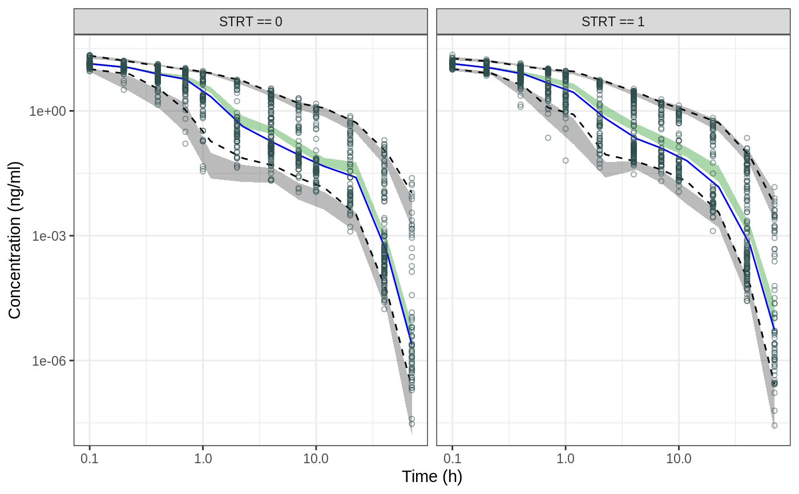

ggvpc_xpose.RdPlot basic vpc with 95% CI of 2.5th, 50th & 97.5th predicted percentile and observed data. This call is to be extended with for stratification, and axes definition using the layering custom to ggplot2 objects. See the examples below to learn more.
ggvpc_xpose( vpc, PI = c(0.025, 0.975), area.col.central = PI.ci.med.arcol, area.col.outer = gray(0.2), linetype.obs.central = "solid", linetype.obs.outer = "dashed", linecol.obs.central = PI.real.med.col, linecol.obs.outer = "darkslategrey", linesize.obs = 0.5, area.alpha = 0.33, point.shape = 1, point.size = 1.25, point.col = "darkslategrey", point.alpha = 0.5, yrange.stretch = c(0.9, 1.1), quiet = TRUE )
| vpc | output from |
|---|---|
| PI | prediction interval (c(0.025,0.975) for 95% CI) |
| area.col.central | color of prediction polygon for the central tendency |
| area.col.outer | color of prediction polygon for the outer percentiles |
| linetype.obs.central | line type of central observed lines |
| linetype.obs.outer | line type of outer observed lines |
| linecol.obs.central | line color of central observed lines |
| linecol.obs.outer | line color of outer observed lines |
| linesize.obs | line width of observed data |
| area.alpha | area alpha transparancy scalar (between 0 and 1) |
| point.shape | numeric value for dot shape |
| point.size | scalar of the observed data dot size |
| point.col | color of observed data dots |
| point.alpha | point alpha transparancy scalar (between 0 and 1) |
| yrange.stretch | vector of c(min,max) which will proportionally rescale the lower and upper limits of the Y axis |
| quiet | whether to suppress process messages |
A ggplot object to be extended optionally
Editing and stratification to be done by adding ggplot layer
nm.read.vpc, ggvpc_standard
library(ggplot2) ## example of vpc NOT involving stratification nm.read.vpc(path = file.path(getOption("qpExampleDir"),"vpc_final_strt")) -> vpc.all ggvpc_xpose(vpc.all) + labs(x="Time (h)", y="Concentration (ng/ml)")ggvpc_xpose(vpc.all) + labs(x="Time (h)", y="Concentration (ng/ml)") + scale_y_log10() + scale_x_log10()## demonstration of changing colors & stratification ggvpc_xpose(vpc.all , area.col.outer = qp.green , area.col.central = qp.blue , area.alpha = 1 , PI = c(0.05,0.95)) + labs(x="Time (h)", y="Concentration (ng/ml)") + scale_y_log10() + scale_x_log10() + facet_grid(~strata)## PI smoothed nm.read.vpc(path = file.path(getOption("qpExampleDir"),"vpc_final_strt"), PI.ci.area.smooth=TRUE) -> vpc.all ggvpc_xpose(vpc.all , PI = c(0.05,0.95)) + labs(x="Time (h)", y="Concentration (ng/ml)") + scale_y_log10() + scale_x_log10() + facet_grid(~strata)